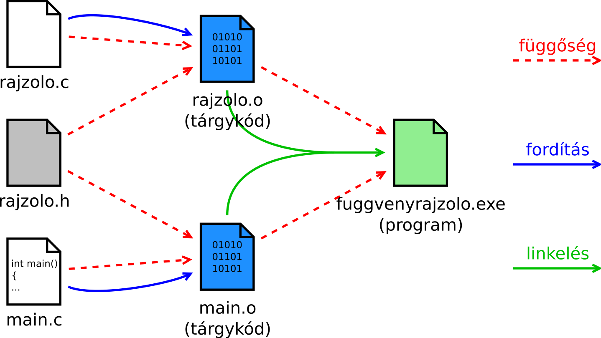

A program és a külvilág
2A parancssori argumentumok
Az elindított programoknak is lehet paramétereket adni:
C:\> notepad.exe szoveg.txt_
A main() függvény sztring mutatók tömbjében kapja meg ezeket:
int main(int argc, char *argv[]) { // vagy char **argv
…
}
C:\> teszt.exe elso "masodik szo"
↑ ↑ ↑
argv[0] argv[1] argv[2] argv[3]=NULL, argc=3 !
A main() függvénynek a C nyelvben két
paramétere van. Az első a parancssorból kapott, szóközzel elválasztott
paraméterek számát mutatja, ezt argc-nek szokás nevezni (argument
count). A második pedig sztringek tömbje, ez a paramétereket tartalmazza. Ennek
szokásos neve az argv (argument vector). Mivel ennek típusa
pointerek tömbje, a main() függvény fejlécében ez megadható
char *argv[] és char **argv formában is.
Az argv[] tömb nulladik eleme, argv[0]
a program nevét tartalmazza, a tényleges paraméterek csak ezután jönnek. Ez okozza azt,
hogy az első tényleges paraméter (a fenti példában az "elso") nem a tömb
nulladik, hanem első indexű helyén van. A paraméterek számába a program saját neve
is beleszámít, ezért a fenti példában argc értéke nem kettő, hanem három.
Ha a programban a kapott parancssori paraméterek számát ellenőrizni szeretnénk, ezt
figyelembe kell venni. Az argv[] tömb méretét nem csak az argc
változón keresztül tudjuk egyébként vizsgálni, hanem azon keresztül is, hogy egy
NULL pointerrel van lezárva. Mindezt könnyű fejben tartani: elég, ha
megjegyezzük, hogy argv[argc] = NULL.
3A program visszatérési értéke
A main() visszatérési értéke egy egész szám. Átveszi az operációs
rendszer, és átadja a programnak, amely elindította a mienket.
Vigyázat: ez nem logikai típusú érték!
- A 0-val tudjuk jelezni, hogy minden rendben.
- Bármi más pozitív szám: általunk meghatározott hibakód.
int main(int argc, char *argv[]) {
if (argc-1 != 2) {
printf("Két paraméter kell!\n");
return 1; // hibakód
}
/* … a program tényleges dolgai … */
return 0; // minden oké
}
Példa az argumentumokra és a main() visszatérési értékére:
#include <stdio.h>
int main(int argc, char *argv[]) {
int egyik, masik;
/* 1-gyel tobb, mint a parameterek */
if (argc-1 != 2) {
printf("%s: ket szamot adj meg!\n", argv[0]);
return 1; /* nem ket parameter van: 1-es hibakod */
}
if (sscanf(argv[1], "%d", &egyik) != 1) {
printf("Hibas elso parameter: %s!\n", argv[1]);
return 2; /* 2-es hibakod: hibas parameter */
}
if (sscanf(argv[2], "%d", &masik) != 1) {
printf("Hibas masodik parameter: %s!\n", argv[2]);
return 2;
}
printf("Az osszeguk: %d\n", egyik + masik);
return 0; /* 0-s kod: minden rendben, feladat elvegezve */
}
Fontos emlékezni arra, hogy az argv[]
sztringeket tartalmaz. Ha számokat veszünk át paraméterként, azt is sztringként
kapjuk! Ilyenkor pl. atoi() vagy sscanf()
függvényhívással lehet számmá alakítani őket.
4Fájlok kezelése
Az stdio.h-ban megadott FILE* típusú pointerrel és függvényekkel.
Hello, vilag! 0 1 2 … 17 18 19
FILE *fp; // fájl mutató (file pointer/handle)
fp = fopen("szoveg.txt", "wt"); // megnyitás
if (fp == NULL) {
perror("szoveg.txt megnyitása");
… … …
}
else {
fprintf(fp, "Hello, vilag!\n");
for (i = 0; i < 20; ++i)
fprintf(fp, "%d\n", i);
fclose(fp); // bezárás
}
- Megnyitás módja: írás (w) / olvasás (r), szöveges (t) / bináris (b).
- Az
fopen()visszatérési értéke: hivatkozás a nyitott fájlra.
Sikertelen megnyitásnál értéke:NULLpointer – ezt ellenőrizni kell.
Windowson az elérési útban \ az elválasztó: C:\Windows\hatter.bmp, Unixon / van:
/usr/bin/firefox. Az fopen() mindig elfogadja a /-t. Ha a \-hez ragaszkodunk,
azt viszont \\-nek kell írni a sztring belsejében, mivel a \ önmagában a speciális
karaktereket jelöli (pl. \n).
Létezik még két további megnyitás mód is:
- hozzáfűzés (a). Ilyenkor a fájlt írásra nyitjuk meg, de a meglévő tartalmát meghagyva. Az írás mutató a fájl végére mutat, vagyis a meglévő tartalomhoz hozzáadva lehet folytatni az írást.
- írás-olvasás (+). Ilyenkor írni és olvasni is lehet. Más betűkkel együtt használjuk: pl. r+ azt jelenti, hogy a fájl tartalma megmarad, de írni is lehet bele.
A bináris fájl és a szövegfájl közötti különbség leginkább
úgy érthető meg, ha a kettőt összehasonlítjuk. Tegyük fel, hogy adott egy int
változónk, legyen a benne tárolt érték 12345. Ha ezt szövegesen írjuk egy fájlba, akkor
az 1, 2, 3, 4, 5
karakterek ASCII kódja kerül a fájlba (összesen 5 bájt). Ha binárisan, akkor pedig annyi bájtot
írunk ki, ahány bájtot a számítógépünkon az int változók foglalnak; és pontosan
azokat a bájtokat, amik a változó memóriaterületén vannak. Ezek lehetnek pl. az 57, 48, 0, 0 bájtok
(ilyen sorrendben), mert 57 + 48*256 + 0*65536 + 0*16777216 = 12345.
5Hogy néz ki egy bináris fájl?
A bináris fájlok azok, amelyek nem szöveget tartalmaznak. Ezekbe bájtokat írunk; legtöbbször
bájtról bájtra kiírunk valamilyen memóriaterületet. Ezekhez az fread() és fwrite() függvények használhatóak.
struct adat {
char nev[13];
short eletkor;
} tomb[2];
strcpy(tomb[0].nev, "Ernoke"); tomb[0].eletkor = 4; strcpy(tomb[1].nev, "Szultan"); tomb[1].eletkor = 5;
sizeof:hány bájt?
void*típus nélküli
mutató
FILE *fp;
fp = fopen("adat.dat", "wb"); /* write, binary */
fwrite(tomb, sizeof(struct adat), 2, fp);
fclose(fp);
A két függvény paraméterezése egyforma: fread(ptr, méret, db,
fp), és fwrite(ptr, méret, db, fp). Ezek a ptr által
mutatott memóriaterület olvassák/írják az fp fájlból/fájlba. Az adat
méret bájt méretű, db darabszámú elemekből áll.
Visszatérési érték a sikeresen olvasott/írt elemek száma.
Itt több dologra kell figyelni. Első a void* típusú mutató (az
fwrite() és az fread() első paramétere ilyen típusú).
Ez a pointertípus azt jelenti, hogy nincsen meghatározva, milyen típusú elemre
mutat az a pointer, hanem csak annyi, hogy valahova a memóriába mutat. Az
fread() és fwrite() függvények azért várnak ilyen
típusú mutatót, mivel nem foglalkoznak az általunk megadott adatok értelmével –
egyszerűen csak elvégzik a fájlműveletet.
Egy valamit azért mégis tudniuk kell az adatunkról, mégpedig azt, hogy hány
bájtból áll. Ezt a fordító meg tudja mondani: a sizeof(típus)
kifejezés megadja azt, hogy hány bájtból áll a megadott típus. Ez
kényelmes, egyrészt mivel nekünk nem kell fejben tartani, másrészt a fordító
úgyis jobban tudja. Ha átvisszük egy másik géptípusra a programunkat, ott a
sizeof(típus) értéke más lehet. Az fread() és
fwrite() második paramétere a típus méretét adja meg, a harmadik
paraméter pedig a darabszámot. Ez a megoldás tömbök kezelésére kiválóan alkalmas:
előbb egy tömbelem mérete, utána a tömb elemszáma.
Az fwrite() visszatérési értéke azt mutatja, hány elemet sikerült kiírnia, az
fread()-é pedig azt, hányat olvasott be. Ezek is „méret”, vagyis size_t
típusúak. (A size_t típus egy egész szám, azonban a mérete (bitszáma) eltérhet az
integerétől.)
A keletkező fájl tartalma:
45 72 6E 6F 6B 65 00 21 80 07 40 00 7B 26 04 00 Ernoke.!..@.{&..
53 7A 75 6C 74 61 6E 00 F0 05 59 2A 6A 22 05 00 Szultan...Y*j"..
Ezt az adatmegjelenítést úgy nevezik, hogy „hexa(decimális) dump”. Bal oldalon a bájtok értéke hexadecimálisan, jobb oldalon pedig a hozzájuk tartozó karakterek. A vezérlőkaraktereket, vagyis az ún. nem nyomtatható karaktereket (mint az újsor vagy a tabulátor) az utóbbiban ponttal szokták helyettesíteni.
Érdekesség. A fenti sztringet 13 karakteren tároljuk, de a beírt sztring rövidebb. A fennmaradó helyen memóriaszemét van – ezt a színezett rész mutatja. Erről volt szó a sztringek kapcsán.
Külön érdekesség még, hogy van egy extra bájt is a struktúrában, a sztring
mintha 14 karaktert foglalna. Ez már nem tartozik a sztringhez, hanem egy
ún. kitöltő (padding) bájt. Ezt a fordító a sztring és a short
közé tette, valószínűleg azért, mert a processzor igényelte azt, hogy a
short párosadik bájton kezdődjön. Ha binárisan írjuk ki fájlba
az adatokat, ez is látszik.
Az is megfigyelhető, hogy ezen a gépen a kétbájtos short típus helyiértékei fordított sorrendben vannak. Előbb az alsó helyiérték: 4, utána a felső: 0. Ernőke életkora 4+0*256 év. Ez is az adott számítógéptípus tulajdonságaitól függ, és egy olyan dolog, amely miatt nem hordozhatóak egyik gépről másikra az ilyen gondolkodás nélkül, memóriatartalmat egy az egyben kiírt bináris fájlok.
6Bináris fájlok: fájl másoló program
C:\> copy eredeti.dat masolat.dat_
#include <stdio.h>
int main(int argc, char *argv[]) {
FILE *fbe, *fki; /* két fájl */
fbe = fopen(argv[1], "rb"); /* read binary */
fki = fopen(argv[2], "wb"); /* write binary */
char puf[1024]; /* puffer; char=bájt */
int olv; /* ahányat olvasott */
while ((olv = fread(puf, sizeof(char), 1024, fbe)) > 0)
fwrite(puf, sizeof(char), olv, fki);
fclose(fbe);
fclose(fki);
return 0;
}
(A hibakezelés most elmaradt, hogy ráférjen a kód egy diára!)
Ez a program az első paraméterében kapott nevű fájlról egy másolatot készít,
amelynek a nevét a második paraméterében kapja. Az fread() a fájl
végén 0-t fog adni (mert 0 bájtot olvasott be). Az fwrite()
visszatérési értéke azt jelzi, hány blokkot írt ki; jelen esetben hány bájtot,
mert egy blokk mérete 1 bájt (második paramétere).
Természetesen a fájlmegnyitások sikerességét, illetve az írások sikerességét
is figyelni kellene, az előző diákon bemutatott módon. Még az
fclose() visszatérési értékét is illene vizsgálni, mert a bezárás
pillanatában is kiderülhet, hogy hiba történt a fájlba írás közben. Ezek nem
férnének fel a diára.
7Hogy néz ki egy szövegfájl?
A szövegfájlok azokat a karaktereket tartalmazzák, amelyeket
a printf() a képernyőre is írna. Azt gondolnánk, hogy a szövegfájlok
könnyedén átvihetők egyik számítógépről / operációs rendszerről a másikra,
azonban itt is lehetnek apró különbségek. Ha a fentebbi, helló világos programot
lefuttatjuk Windowson és valamilyen Unix operációs rendszeren, akkor két
különböző fájlt kapunk. Egyes rendszerek máshogy jelzik a szövegfájlokban a sorok végét (\n).
Windowson két bájt, CR LF (0x0D 0x0A), Unixokon csak LF (0x0A).
Unixokon (pl. Linux):
48 65 6C 6C 6F 2C 20 76 69 6C 61 67 21 0A 30 0A Hello, vilag!.0. 31 0A 32 0A 33 0A 34 0A 35 0A 36 0A 37 0A 38 0A 1.2.3.4.5.6.7.8. 39 0A 31 30 0A 31 31 0A 31 32 0A 31 33 0A 31 34 9.10.11.12.13.14 0A 31 35 0A 31 36 0A 31 37 0A 31 38 0A 31 39 0A .15.16.17.18.19.
Windowson:
48 65 6C 6C 6F 2C 20 76 69 6C 61 67 21 0D 0A 30 Hello, vilag!..0 0D 0A 31 0D 0A 32 0D 0A 33 0D 0A 34 0D 0A 35 0D ..1..2..3..4..5. 0A 36 0D 0A 37 0D 0A 38 0D 0A 39 0D 0A 31 30 0D .6..7..8..9..10. 0A 31 31 0D 0A 31 32 0D 0A 31 33 0D 0A 31 34 0D .11..12..13..14. 0A 31 35 0D 0A 31 36 0D 0A 31 37 0D 0A 31 38 0D .15..16..17..18. 0A 31 39 0D 0A .19..
Szöveges módban nyitott fájlnál ezt elfedi nekünk a C.
Kezelés: fp = fopen(név, "…t"), fprintf(fp, …), fscanf(fp, …).
A szövegfájlokat a printf() és a scanf() párjával,
az fprintf()-fel és az fscanf()-fel lehet kezelni.
Ezeknek első paramétere a megnyitott fájl, a folytatás pedig ugyanúgy van, mint a
képernyő / billentyűzet párjuknál. A szövegfájlokat lineárisan kezeljük, nem
ugrunk benne ide-oda. Bár elvileg lehetséges, de nehéz megvalósítani az adott
sorra ugrást: ki kellene számolnunk a bájtban megadott pozíciót. Azt meg nem
ismerjük, amíg nem olvastuk be a sorokat, mert minden sor különböző hosszúságú
lehet.
A "t"-vel, szöveges módban megnyitott fájl olvasásakor
és írásakor a konverziót a C fájlkezelő függvényei automatikusan
elvégzik. Vagyis Unixon pl. a \n sortörést változatlanul
kiírják a fájlba, Windowson viszont a printf("\n") hatására nem egy,
hanem két bájt kerül a fájlba. Viszont az automatikus konverzió miatt ezzel
nekünk nem kell foglalkozni, csak annyiban, hogy "t" módban kell
megnyitni a fájlt, ha szöveges formátumot szeretnénk.
A fenti apróságtól eltekintve a szövegfájlok sokkal inkább hordozhatóak, hiszen a bennük tárolt adatok nem függenek a számábrázolás módjától, amit az adott géptípus hardvere határoz meg. Ez az oka annak, hogy az utóbbi években egyre inkább terjednek a szöveg alapú formátumok:
- szöveges dokumentumok: HTML, RTF, XML (DOCX)
- adatok, adatbázisok: XML
8Fájlok – további tudnivalók
Fájlkezelés – további függvények és változók
C puskát!
perror(sztring)
A legutóbb történt hiba okát írja ki a szabványos hibakimenetre. Hasztringnem NULL pointer, akkor azt is kiírja. Pl.perror("Hiba a megnyitásnál")→ „Hiba a megnyitásnál: nincs ilyen fájl”.fseek(fp, pozíció, honnan)
Ugrás a bájtban megadott pozícióra. Ahonnanértékei:SEEK_SET=elejétől,SEEK_END=végétől,SEEK_CUR=aktuális pozíciótól számolva.ftell(fp)
Az aktuális pozíció lekérdezése (bájtokban).fputc(c, fp),fgetc(fp)
Aputchar()ésgetchar()párja.fputs(str, fp),fgets(str, méret, fp)
Aputs()és agets()párja.errno
Globális változó, ami a legutolsó hiba kódját tartalmazza.feof(fp)!
Megmondja, hogy fájl vége volt-e sikertelen az előző olvasás. (Nem használjuk!)
Vigyázat! Az feof() függvény kicsit
problémás, rendszeresen helytelenül szokták használni. Ugyanis ez a függvény nem azt
jelzi, hogy a fájl végén tart-e az olvasás, hanem azt, hogy az előző sikertelen olvasási
művelet a fájl végének elérése miatt történt-e. Az feof() nem jóstehetség!
Nem fogja előre jelezni a fájl végét. Csak akkor ad igaz értéket, ha már bekövetkezett
(múlt idő!) egy sikertelen olvasás. Ezért a while(!feof(fp)) fejlécű ciklusok
teljesen bizonyosan hibásak. Az feof() helyett a beolvasást végző függvények:
fscanf(), fread(), fgets(), fgetc()
visszatérési értékét kell figyelni.
Szabványos adatfolyamok
fscanf(stdin, "%d", &i); fprintf(stdout, "Helló!");
scanf("%d", &i); // ugyanaz
printf("Helló!");
fprintf(stderr, "Hiba: nem megfelelő adatok a fájlban!");
C-ben a szabványos kimeneti és bemeneti csatornákat (adatfolyamokat, stream) is fájlként
látjuk (második félévben ez elő fog még kerülni). A normál printf(…) függvény
egyenértékű egy fprintf(stdout, …) hívással, a scanf(…) pedig egy
fscanf(stdin, …) hívással. Az stdin neve szabványos bemenet (standard
input), az stdout-é szabványos kimenet (standard output), az stderr-é
pedig szabványos hibakimenet (standard error output).
A szabványos hibakimenet (stderr) a normál kimenethez hasonló a programunk
számára. A kettő közötti különbség az, hogy a normál kimenetre a program által előállított
eredményt, kimeneti adatot szokás írni, a hibakimenetre pedig a hibaüzeneteket. Így elkerülhető,
hogy a kettő egymással keveredjen, ha a kimeneti adatokat egy fájlba szeretnénk irányítani, vagy
egy másik programnak átadni.
Az előfeldolgozó
10A preprocesszor
A C fordítás menete
kettőskereszt
hash mark
- Előfeldolgozás: az előfeldolgozó (preprocessor)
kezeli a
#preprocesszor direktívákat, és távolítja el a kommenteket. - Tényleges fordítás: a gépi utasításokká alakítás.
Az előfeldolgozó utasításai #-tel kezdődnek és a sor végéig tartanak.
Nem kell a végükre pontosvessző.
Az előfeldolgozó további feladatai
-
Egy sorba fűzi a \ karakterrel több sorban megadott forráskódot.
Vagyis ez a kettő egyenértékű:
printf("\ hello\ hello");printf("hellohello"); - Összefűzi a közvetlenül egymás mellett álló sztring konstansokat:
"Hello" "vilag"="Hellovilag". - Kicseréli az ún. hármas karaktereket (trigraph) a megfelelő párjukra.
A C megengedi, hogy egyes írásjeleket, pl.
[],<>stb. más karakterekkel helyettesítsünk. Ennek célja az, hogy lehessen olyan billentyűzeten is C programot írni, amelyeken ezek nincsenek – látszik, hogy ez egy nagyon régi, mára elavult lehetősége a nyelvnek. Ez egy helyes C program:??=include <stdio.h> int main(int argc, char *argv??(??)) ??< printf("hello world\n"); return 0; ??>A csere sztringeken és kommenteken belül is megtörténik. Egy sztringben lévő egymás utáni két??karakter hatására ez aktiválódhat, azért fontos tudni róluk. Manapság kódot így nem szokás írni, sőt egyes fordítóknak külön jelezni kell, ha kérjük ezeket a helyettesítéseket.
#include <stdio.h>
#include <stdlib.h>
#include "rendezes.h"
int main(void) {
…
}
Ismerős preprocesszor direktíva: #include
Az #include a megadott fájlokat
beilleszti a megadott helyre, mintha copy-paste lenne.
#include <…>– szabványos fejlécfájlok#include "…"– saját fejlécfájlok
Az idézőjeles és a kacsacsőrös változat között igazából annyi a különbség, hogy más mappában keresi a megadott fájlt a fordító.
11#define: konstansok és makrók
A #define direktívával konstansokat és makrókat hozhatunk létre.
Hatását az #undef szünteti meg.
– Bjarne Stroustrup
#define PI 3.14159265358979
#define MERET 100
double tomb[MERET];
for (i = 0; i < MERET; ++i)
tomb[i] = PI;
#undef MERET
A C maga is tartalmaz ilyen konstansokat. Pl. a beépített típusok
értékkészletét mutató makrók a limits.h-ban.
| konstans | érték |
|---|---|
| CHAR_MIN, CHAR_MAX | a char mérettartománya, pl. -128…127 |
| INT_MIN, INT_MAX | a signed int mérete |
| UINT_MIN, UINT_MAX | az unsigned int mérete |
Függvényszerű paraméteres makró a #define direktívával:
#define SZORZAT(A,B) ((A)*(B)) #define MAX(A,B) ((A)>(B)?(A):(B))
Van itt néhány buktató. Az egyik pusztán szintaktikai: a
paraméteres makrók definíciójában nem lehet szóköz a makró neve és a paramétereit
jelző zárójel között. MAX (A,B) azt jelenti, hogy a
MAX makró értéke (A,B). Nézzük meg a komolyabb buktatókat!
1. buktató
A preprocesszor egy buta szövegfeldolgozó program! Csak behelyettesíti a megadott szövegrészleteket:
#define SZORZAT(A,B) A*B
printf("Szorzat: %d", SZORZAT(1+1, 2+3));
printf("Szorzat: %d", 1+1*2+3); // előfeldolgozva
Ha zárójelezzük a makróban a paramétereket, akkor biztosan helyesen értékelődik ki akkor is, ha összetett kifejezést adunk meg paraméterként:
#define SZORZAT(A,B) ((A)*(B))
printf("Szorzat: %d", SZORZAT(1+1, 2+3));
printf("Szorzat: %d", ((1+1)*(2+3))); // előfeldolgozva
Ha nem zárójelezzük a makrókban a paramétereket, akkor az operátorok precendeciái miatt a kifejtett C kódrészlet mást jelenthet, mint amire számítunk. Ezért azokat mindig kötelező zárójelezni! A többlet zárójelekből baj nem lehet.
2. buktató
Ha olyan makrót írunk, amelyik többször is kiértékeli valamelyik paraméterét, akkor nem szabad mellékhatással rendelkező kifejezést megadni neki! Különben a következő probléma adódhat:
#define MAX(A,B) ((A)>(B)?(A):(B))
printf("%d", MAX(++a, ++b)); /* nem jó ötlet… */
printf("%d", ((++a)>(++b)?(++a):(++b))); // előfeldolgozva
Érdekesség: Bjarne Stroustrup dán programozó. Ő találta ki a C++ nyelvet, amely a C-nek a továbbfejlesztése. Második félévben lesz tananyag a Prog2 tárgyból.
12Feltételes fordítás: #if, #ifdef, #ifndef
#ifdef / #ifndef, #endif – ha definiálva van a makró
A feltételtől függően (definiálva van-e az adott makró) lefordítja, vagy kihagyja a közbezárt részt.
#define TESZT /* végleges programban nem kell */ #ifdef TESZT /* csak tesztelés közben */ fprintf(stderr, "x = %d", x); #endif
#if – ha igaz a kifejezés
Ez is arra való, hogy kihagyjuk vagy beillesszünk részeket. Itt arra használjuk, hogy a használt grafikus könyvtár verzióját ellenőrizzük; ha nem megfelelő, akkor megállítjuk a fordítást a megadott hibaüzenettel.
#include <SDL.h> #if SDL_MAJOR_VERSION != 1 || SDL_MINOR_VERSION != 2 #error 1.2-es verzioju SDL kell! #endif
#pragma – nem szabványos kiterjesztések
A fordítók saját, nem szabványos kiterjesztései. Ha egy fordító nem érti a #pragma sort, figyelmen kívül hagyja. Pl.
#pragma omp parallel for schedule(dynamic) /* OpenMP */
for (y=0; y<magassag; y++) {
…
OpenMP: az ezt ismerő fordítóknak megadhatjuk, hogy egy ciklus iterációit szétossza a gépben lévő processzorok (magok) között.
Mivel semelyik #pragma nem lehet szabványos
(éppen az a célja, hogy jelezze a fordítónak, nem szabványos dolgot
írunk be), ezért a #pragma once sem szerencsés.
A fejlécfájlok többszöri feldolgozása ellen az #ifndef+#define
technikát kell használni, amelyet minden fordító felismer.
Többmodulos programok
14Példa nagy projekt: függvényrajzoló
fuggveny.zip
Lépések egy nagy program tervezésénél:
- Pontos specifikáció
- Adatszerkezetek megtervezése
- Algoritmusok megtervezése
- Implementáció
15Függvényrajzoló: a rajzolás módja
Rakja össze a program a függvényt szakaszokból!
Ezt könnyedén leírhatjuk SVG-ben (szöveges, vektoros képformátum):
<svg width="320" height="80" xmlns="http://www.w3.org/2000/svg"> <line x1="30" y1="17.9136" x2="0" y2="42.9137" stroke="blue" /> <line x1="60" y1="21.0799" x2="30" y2="17.9136" stroke="blue" /> <line x1="90" y1="48.3747" x2="60" y2="21.0799" stroke="blue" /> <line x1="120" y1="64.9893" x2="90" y2="48.374" stroke="blue" /> </svg>
A program ilyen fájlokat tud majd létrehozni.
16Függvényrajzoló: az adatszerkezet
Szakasz: kezdőpont, végpont és szín.
typedef struct Szakasz {
double x1, y1, x2, y2;
char szin[20+1]; /* pl. "red" */
struct Szakasz *kov;
} Szakasz;
Kép: méret, pozíció (origó), nagyítás és a szakaszok.
typedef struct Rajz {
int kx, ky; /* kép mérete */
double ox, oy; /* origó pozíciója a képen */
double nx, ny; /* nagyítás */
Szakasz *szakaszok; /* szakaszok listája */
} Rajz;
A terveink a következők. A megrajzolt függvényekhez egy csomó szakasz tartozik. Ezek különböző színűek is lehetnek. De nem csak ezek a szakaszok tartoznak a képhez, hanem annak vannak egyéb tulajdonságai is: tudni kell, mekkora (kx, ky), hol van rajta az origó (ox, oy) és hogy mekkora a nagyítása (nx, ny). Az utóbbi azt jelenti, hogy a monitoron hány képpont jelenti a matematikai koordinátarendszerben az egységet. Ha mindezek megvannak, akkor egy függvény kirajzolható. Ezek alapján a rajz struktúra tartalmaz egy szakaszokból álló listát. Az egyes rajzokon eltérő számú szakasz lehet (amelyek menet közben egyre többen vannak), ezért a lista jó ötletnek tűnik.
17Függvényrajzoló: a rajzolás maga
Tervezzük meg az algoritmusokat! Legfontosabb a függvény kirajzolása – ezzel foglalkozunk először.
A monitoron és a képeken más koordinátarendszert szokás használni (origó bal felső sarokban,
x jobbra, y lefelé), mint a matematikában (origó középen, x jobbra, y felfelé). A rajzaink
nagyítása is változhat. Ezért praktikus függvényeket írni, amelyek ezen koordinátarendszerek
között a transzformációt elvégzik, mert így bármikor át tudunk térni a képbeli koordinátákról a
matematikai koordinátákra és fordítva. Ezek a függvények a kep2mat() és a
mat2kep().
void kep2mat(Rajz *r, double kx, double ky, double *mx, double *my); void mat2kep(Rajz *r, double mx, double my, double *kx, double *ky);
Ezek segítségével már könnyű megvalósítani a függvény ábrázolását. A rajzolást, ha a kép koordinátarendszerében végezzük, akkor biztosak lehetünk abban, hogy nem lesz túl cakkos sem a függvény (mint a fentebbi képen), de nem is számoljuk ki feleslegesen sok pontban (olyan sűrűn, hogy már nem is látszik a különbség – ez csak foglalná feleslegesen a memóriát). Ezért a kép koordinátái szerint haladunk egyesével; előbb átalakítva a képkoordinátarendszerbeli x-et matematikai koordinátává, ami a függvénybe behelyettesíthető. Az így kapott matematikai y koordinátát utána képbeli y koordinátává alakítva megkapjuk az SVG fájlba írandó szakasz koordinátáit.
void szinuszt_rajzol(Rajz *r) {
double const lepes = 1.0;
double xk, yk, x_elozo, y_elozo; /* kép koord. */
double xmat, ymat; /* matematikai koord. */
for (xk = 0; xk <= r->kx; xk += lepes) {
kep2mat(r, xk, 0, &xmat, NULL); // képből matematikai
ymat = sin(xmat);
mat2kep(r, xmat, ymat, NULL, &yk); // matematikaiból kép
szakasz_rajzol(r, xk, yk, x_elozo, y_elozo, szin);
x_elozo = xk;
y_elozo = yk;
}
}
18A függvényre mutató pointerek
Vegyük át a megrajzolandó függvényt is paraméterként!
mutató pointer:
majd lesz róla szó.
double parabola(double x) {
return x*x + 1.2*x - 5.3;
}
fv_rajzol(&r, parabola, "red");
fv_rajzol(&r, sin, "blue"); // math.h
A görbe megrajzolásának algoritmusa mindig ugyanaz.
void fv_rajzol(Rajz *r, double (*pfv)(double), char const *szin) {
…
for (xk = 0; xk <= r->kx; xk += lepes) {
…
y = pfv(x); // a paraméterként kapott függvény hívása
…
}
Pointer, ami egy függvényre mutat. Paramétere: egy double, visszatérési értéke
is egy double.
double (*pfv)(double);
A fenti negyzet() függvénynek is ilyen az aláírása, és a math.h
sin() függvényének is. Bármelyik egyéb, ugyanilyen aláírással rendelkező – egy
double paraméterű, double visszatérési értékű – függvényt képes így
ábrázolni a rajzoló!
A függvényekre mutató pointerekről egy későbbi előadáson lesz szó. Most csak említésképp szerepelnek.
19Nagy projektek: egy fájl? több modul!
million lines of code
Egy közepes projekt néhány tízezer sorból áll, egy nagy projekt több százezer, millió sorból.
A programot szerkezeti egységekre, modulokra kell bontani.
struct Tort, tort_osszead(), tort_szoroz()… – ez lehet egy modul.
Ha a projekt egyetlen, nagy forrásállományban lenne megírva:
- akkor áttekinthetetlen lenne,
- a szerkesztő programok nehezen/lassan kezelnék,
- nehézkes lenne többen egyszerre dolgozni rajta,
- egy-egy újrafordítás akár órákat vehetne igénybe.
Ha szerkezeti egységekre bontjuk a programot:
- ezek önállóan fordíthatóak, a program ezek összeépítéséből lesz,
- egy csapat különböző tagjai egymástól függetlenül dolgozhatnak,
- az egyedi fordítások gyorsan lezajlanak.
Ez az egyedül fejlesztett programoknál is nagyon hasznos: az egyes modulok újra felhasználhatóak más projektekben. Érdemes a funkcionális egységeket általános módon megírni, hogy minél könnyebben fel lehessen használni őket más feladatok megoldásában.
20Főprogram és a két modul
Modulok: a főprogram és a függvényrajzoló.
függvény
hova való?
rajz_inicializal(&r1, 320, 120, 160, 60, 25, 25); // !
do {
valasztas = menu();
switch (valasztas) {
case 1: /* sin(x) rajzolása */
fuggveny_rajzol(&r1, sin, "blue"); // !
break;
...
case 4: /* rajz fájlba írása */
rajz_fajlba(&r1, "rajz.svg"); // !
break;
}
} while (valasztas != 0);
rajz_felszabadit(&r1); // !
A programot két modulra lehet bontani. Az első a fő programmodul. Ez tartalmazza a
main() függvényt, a menu() függvényt, és az ábrázolandó parabolát
kiszámoló függvényt is. A másik modul a függvények megjelenítését tartalmazó
programrészekből áll össze. Érezhető, hogy ez egy külön egység, amely önmagában is megállja a
helyét. Lehetne egy teljesen másik programot is írni, és abban ugyanezt az ábrázolót
használni.
Az ábrázoló függvényeit ezen belül tovább lehet bontani két csoportra. Azok a függvények,
amelyek az ábrázoló modul használója számára is fontosak, például a
rajz_inicializal() és a fuggveny_rajzol(). Ugyanebbe a csoportba
tartozik a függvények mellett a Rajz nevű típus, hiszen ezt is ismernie kell annak,
aki használni szeretné. Definiálnia kell tudni Rajz típusú változót! A másik
csoportba olyan függvények tartoznak, amelyek a használó számára nem lényegesek, sőt
jobb ha nem is kell foglalkoznia velük. Ezek például a koordinátarendszerek közti transzformációt végző
kep2mat() és mat2kep() függvények.
21A két modul forrásfájljai
A program a két forráskód összeszerkesztéséből fog keletkezni.
az ábrázoló
/* más modulból NEM látszó függvény: static */
static void kep2mat(………) { /* …kód… */ }
static void mat2kep(………) { /* …kód… */ }
static int szakasz_rajzol(………) { /* …kód… */ }
/* más modulból is látszó függvények */
void rajz_inicializal(………) { /* …kód… */ }
void rajz_felszabadit(………) { /* …kód… */ }
void rajz_ures(………) { /* …kód… */ }
int fuggveny_rajzol(………) { /* …kód… */ }
a főprogram
static double parabola(double x) { /* …kód… */ }
static int menu() { /* …kód… */ }
int main(void) { /* …kód… */ }
A programot a fentiek alapján két külön forrásfájlra bonthatjuk. A
függvények elé írt static kulcsszó azt mondja, hogy az a függvény csak abból a
modulból (abból a forrásfájlból) kell elérhető legyen, máshonnan nem. Vagyis pl. a
main.c-ből nem lehet majd meghívni a kep2mat() függvényt. De nincsen is rá
szükség. Elég, ha ennek a függvénynek a láthatóságát (scope) a függvényábrázoló modulra
korlátozzuk. (Egy változó vagy függvény (név) láthatósági tartományának (scope) azt a
kódrészletet nevezzük, amelyben az adott név definiálva van.) Az ábrázoló modul többi függvényei
viszont elérhetőek kell legyenek a main.c-ből, hiszen a főprogram meghívja őket.
22Deklarációk és definíciók
A main.c fordításakor a fordítónak rengeteg
deklarációra van szüksége:
#include "rajzolo.h"
int main(int argc, char *argv[]) {
Rajz r1;
rajz_inicializal(&r1, 320, 120, 160, 60, 25, 25);
A fejlécfájl: típusdefiníciók és függvénydeklarációk vannak benne.
typedef struct Szakasz { ……… } Szakasz;
typedef struct Rajz { ……… } Rajz;
void rajz_inicializal(Rajz *r, int kx, int ky, ………);
void rajz_felszabadit(Rajz *r);
int fuggveny_rajzol(Rajz *r, double (*fv)(double), char const *szin);
void rajz_ures(Rajz *r);
void rajz_fajlba(Rajz const *r, char const *nev);
Vagyis fogjuk az összes olyan típust és függvényt, amelyeket láthatóvá szeretnénk tenni a
többi modul számára, és készítünk belőlük egy rajzolo.h nevű fejlécfájlt
a rajzolo.c modul mellé.
Mi kerül a forrásfájlba (.c), és mi kerül a fejlécfájlba (.h)? Ez egyszerű: a kódfájlokba (.c) mennek a függvények definíciói, a fejlécfájlokba mennek a függvények deklarációi. Persze csak azok, amelyeknek máshonnan is látszaniuk kell, másik modulból. A statikus függvényeket, amelyek csak az adott modulból látszanak, nincsen értelme (sőt: hiba!) szerepeltetni a fejlécfájlban, hiszen azok a statikus jellegük miatt amúgy sem érhetők el máshonnan. Ugyancsak a fejlécfájlokba mennek a kívülről is használható típusok definíciói.
Ezt a fejlécfájlt a többi modul, amely szeretné használni a függvényrajzoló modul
szolgáltatásait, beilleszti a saját forráskódjába az #include "rajzolo.h"
sorral. Így a fordító érteni fogja, mi az, hogy Rajz, és azt is fogja tudni, hogy
létezik a rajz_inicializal() függvény, ismeri a paramétereinek típusait és így
tovább. Le tudja fordítani a kódot!
Fontos, hogy a fejlécfájlt nem csak a többi modulnak kell beillesztenie, hanem
annak a modulnak is, amelyhez tartozik. Vagyis jelen esetben a rajzolo.c-nek is
include-olnia kell a rajzolo.h-t! Ennek oka kettős: egyrészt a függvényrajzoló
kódjának is ismernie kell a hozzá tartozó típusokat (Szakasz, Rajz),
másrészt pedig így biztosítható az, hogy a modul forráskódjában nincsenek véletlenül hibásan
megadva a függvények paraméterei. Ha a forrásfájlban más fejléccel definiálunk egy függvényt,
mint a fejlécfájlban, akkor az a projekt fordításakor hibához vezet. Ha beillesztjük minden
modulba a saját fejlécfájlját is, akkor ezeket a hibákat a fordító megtalálja!
23Fejlécfájlok használata; #include guard-ok
A függvényrajzoló modul fejlécfájlja:
#ifndef RAJZOLO_H_BEILLESZTVE
#define RAJZOLO_H_BEILLESZTVE
………
typedef struct Rajz {
int kx, ky;
double ox, oy;
double nx, ny;
Szakasz *szakaszok;
} Rajz;
void rajz_ures(Rajz *r);
void rajz_fajlba(Rajz const *r, char const *nev);
………
#endif
Az #ifdef és #ifndef direktívákkal ellenőrizni
tudjuk, hogy definiálva van-e egy makró, és attól függően egy programrészt teljesen kihagyhatunk
a fordításból. Jelen esetben ezt arra használjuk, hogy biztosítsuk azt, a függvények ne legyenek
többször deklarálva. Összetett projektek esetén ugyanis a fejléc fájlok általában egymást is
betöltik (include). A fenti preprocesszor direktíva úgy működik, hogy az első betöltéskor még
beilleszti a kódot, mivel a FUGGVENY_H_BEILLESZTVE makró ilyenkor még nincs
definiálva: #ifndef. De egyből definiálja is, vagyis másodjára már az egész
kódrészlet kimarad.
24Függvényábrázoló – függőségek és fordítás
A futtatható program előállítása valójában mindig két lépésből áll:
- a forráskód lefordítása (compile) tárgykóddá (object code),
- a tárgykódok összeszerkesztése (link) futtatható programmá (executable).
A tárgykód olyan gépi kódú program, amelyben hivatkozások vannak
(változónév, függvénynév) másik modulban lévő elemekre. Így csak az
összeszerkesztéskor kell őket feloldani. A fordító neve angolul:
compiler, a szerkesztőé: linker. Az egyes lefordított
.c fájlokat fordítási egységnek (compilation unit) is szokták
nevezni.
A kész programunk a fentiek alapján most három lépésből állítható elő:
- Le kell fordítani a függvény modult. Ebből egy tárgykód fájl keletkezik.
- Le kell fordítani a főprogram modult is. Ebből is egy tárgykód lesz.
- Végül pedig a két tárgykódot össze kell szerkeszteni.
Az összeszerkesztéskor (linking, „linkelés”) nem csak az általunk írt függvényeinket,
hanem a szabványos C könyvtári függvényeket (printf(), sin() stb.)
is megkeresi a linker.
gcc -c rajzolo.c -o rajzolo.o gcc -c main.c -o main.o gcc rajzolo.o main.o -lm -o fuggvenyrajzolo.exe
A három műveletet az itt látható parancsok begépelésével lehet elvégezni Linux rendszeren. Windowson is hasonlóképpen működik. A fordítási és szerkesztési lépéseket egyébként az integrált fejlesztőkörnyezetek automatikusan elvégzik, azt ritkán kell parancssorból, kézzel végeznünk: a laboron használt Code::Blocksban is csak egy kattintás, és indul is a lefordított programunk.
Ugyancsak automatikusan végzik a fejlesztőkörnyezetek a függőségek feltérképezését.
Figyeljük meg az ábrán: az egyes fájlok módosítása esetén nem kell mindegyik műveletet
újra elvégezni. Például ha a main.c fájl tartalmát szerkesztjük, akkor
nincsen szükség a rajzolo.c újbóli fordítására, hiszen azon lépés által
keletkező rajzolo.o fájl tartalma nem függ a main.c
tartalmától. Szükség van viszont a main.c fordítása után
az újbóli linkelésre is, hiszen a megújult main.o-tól függ a végleges
programfájl, a fuggveny tartalma. Így végeredményben egy
fordítást tudunk megspórolni ebben az esetben.
Nagyobb projekteknek ennél sokkal bonyolultabb függőségi gráfjuk van. A függőségek figyelembe vételével könnyen meghatározható az, hogy egy adott fájl módosítása esetén mely fordítási, linkelési lépéseket lehet elhagyni. Minél kisebb részekre, fájlokra van bontva a projekt, annál kisebbek lehetnek az újból elvégzendő lépések, hiszen annál több fájl marad változatlan egy kisebb módosítás esetén.
25Globális változók használata
A függvényeken kívül definiált változók: globális változók. Ezeket minden függvény eléri.
- Ezeket is megoszthatjuk modulok között.
- A változódefiníciók a modulokba kerülnek.
- A deklaráció az
externkulcsszóval történik. (Enélkül definíció lenne!) - Statikus változó globálisan: csak az adott modulban látszik.
int megosztott = 5; static double szorzo;
modul.cextern int megosztott;
modul.h
#include "modul.h"
int main(void) {
int a, b = 7;
a = b + megosztott;
…
foprogram.c Itt jól látszik, mit jelent változók esetén a deklaráció és
a definíció: deklaráció, amikor megmondjuk a típusát, definíció, amikor memóriát
is foglalunk hozzá. Az extern-nel kezdődő sor csak deklaráció. Azt
mondja a fordítónak, hogy van valahol egy ilyen nevű és ilyen típusú változó egy
másik modulban; az linkeléskor majd elő fog kerülni. (Az extern
kulcsszó is egy tárolási osztályt (storage class) ad meg (storage class specifier);
a linkernek fontos, hogy tudja, másik modulban kell keresni a változót.)
A globális változókat igyekszünk kerülni, ugyanis nehezen áttekinthetővé teszik a programot. Mivel mindegyik modulnak van hozzáférése a globális változókhoz, nem lehet tudni, melyik működése függ attól, és hogy melyik fogja azt módosítani. Ha a függvényeknek mindent paraméterben adunk át, akkor tiszta: csak az lehet a bemenő adat, ami paraméter, és csak az a kijövő adat, ami a visszatérési érték.
Láthatóság és élettartam: összefoglalás
Egy ilyen forrásfájlhoz:
modul.cint globalis; // globális, projektben int globalis_fv(void) { int lokalis; static int statikus_lokalis; … } static int statikus_globalis; // globális, csak a modulban static int modul_fv(void) { … }Ilyen fejlécfájlt kell írni:
modul.h#ifndef MODUL_H_INCLUDED #define MODUL_H_INCLUDED extern int globalis; // globálisok deklarációi int globalis_fv(void); #endifA láthatóságot a fenti kommentek jelzik. A változók élettartamát (storage duration) is könnyű megjegyezni: a globális változók a program futásának egész ideje alatt léteznek, a lokális változók pedig csak akkor, amikor az őket létrehozó függvényben van épp a végrehajtás. A függvények statikus változói öszvérként viselkednek: a láthatóságuk lokális, azaz a függvényre korlátozódik, az élettartamuk viszont a globális változókéhoz hasonló. Hiszen éppen úgy tudják megőrizni az értéküket a függvényhívások között, hogy nem szűnnek meg a függvényből visszatéréskor.
Programok életciklusa
27Egy program életciklusa
technológia
3. félév
- Specifikáció
- Elvárások, képességek (feature)
- Mit fog tudni a program
- Fejlesztés
- fejlesztői eszközök, technológiák megválasztása,
- a rendszer magas szintű megtervezése:
- modulok és kapcsolatuk,
- be-, és kimeneti formátumok,
- algoritmusok, adatszerkezetek megtervezése,
- implementáció elkészítése (kód dokumentálása párhuzamosan),
- tesztelés, hibajavítás,
- dokumentáció elkészítése.
- Támogatás, továbbfejlesztés
28Hibalehetőségek és tesztelés
Programozói hibák
- Szintaktikai hiba
- Nyelvtanilag hibás kód – le sem fordul.
Pl.for (x=0, x<10, ++x) - Szemantikai hiba – bug
- Nyelvileg helyes, de logikailag hibás program.
- Hibás algoritmus, hibás kódolás…
- Inicializálatlan változó, tömb túlindexelés…
Futási idejű hibák: hibás bemenet
- Felhasználó rossz adatot gépel
- Hibás a beolvasott fájl
– Alan Perlis
A tesztelés sokkal fontosabb és nehezebb lépés, mint gondolnánk!
- Egy egyszerű programot könnyű letesztelni.
- Egy komplex rendszer összes funkcióját leellenőrizni minden lehetséges bemenet és belső állapot esetén szinte lehetetlen.
A kis részektől a nagy felé haladva érdemes tesztelni.
- Minden függvényt külön is tesztelni kell.
- Minden lehetséges ágat (elágazások, ciklusok) ki kell próbálni.
29Dokumentáció I.

A dokumentáció szintjei:
- Fejlesztői dokumentáció
- adatszerkezetek dokumentációja,
- algoritmusok dokumentációja,
- a kód szerkezeti áttekintése,
- a kód részletes dokumentációja.
- A forráskód
- kommentezés!
/* ajánlott: a kód 30%-a */
- kommentezés!
- Felhasználói dokumentációja
- a program használatának a leírása.
- Tesztelési dokumentáció
- a tesztelés körülményeit, eredményeit írja le
30Dokumentáció II.
A dokumentációt támogató kiváló eszköz pl. a Doxygen.
forráskódja
végig ilyen!
/**
* Megmondja, hogy egy szám prim szám-e.
* @param szam a megvizsgálandó szám
* @return logikai IGAZ, ha a szám prím
* @author Fejlesztő Fanni
* @date 2011. 10. 15.
*/ // Speciális megjegyzés!
int prim(int szam) {
int oszto;
for (oszto = 2; oszto*oszto <= szam; ++oszto)
if (szam%oszto == 0)
return 0;
return 1;
}
Ebből a Doxygen automatikusan generálja:
A generált doksi elérhető ide kattintva.
31Tesztelés I. – Hogyan ellenőrizzük?
„Trace”-elés
#define TESZT #ifdef TESZT fprintf(stderr, "x = %d", x); /* csak tesztelés közben */ #endif
A tesztelt program extra kimenete: a változó értéke mindig megjelenik a képernyőn, ha elér erre a pontra.
Nyomkövetővel (debugger)
már volt
- Változó értékének megfigyelése (watch)
- Töréspont (breakpoint)
- Lépésenkénti végrehajtás
32Tesztelés II. – makrók és assert()
Beépített makrók: a fordítás körülményeire utalnak.
printf("Fordítás: %s %s\n", __DATE__, __TIME__);
printf("%s:%d\n", __FILE__, __LINE__);
Fordítás: Oct 14 2011 10:14:34 proba.c:6
Ezeknek a neve két-két alulvonás (underscore) karakter között van. Céljuk: verziókövetés, hibaüzenetek kiírása.
assert(): programozói hibák megtalálására való.
#include <assert.h>
void sztring_masol(char *ide, char *ezt) {
assert(ide != NULL);
assert(ezt != NULL);
...
Az assert.h-ban definiált makró megszakítja
a program futását, és hibaüzenetet ír ki, ha a paraméterként kapott kifejezés hamisra
értékelődik ki.
Ha definiálva van az NDEBUG makró, akkor üres
utasításra cserélődik – vagyis a program végleges változatát
már nem lassítják az ellenőrzések.